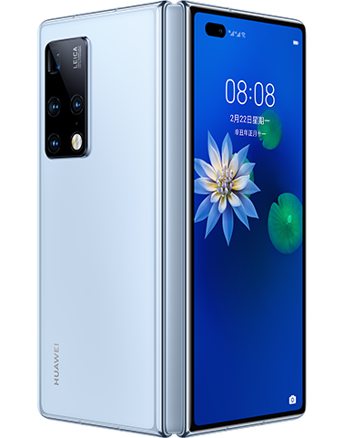
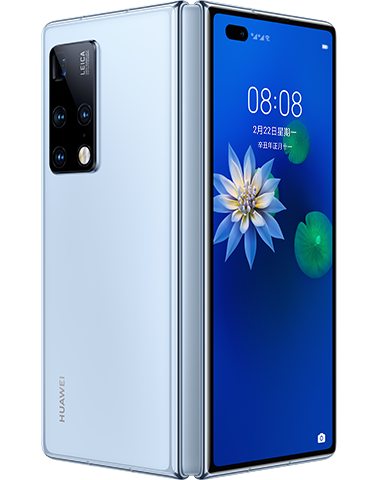
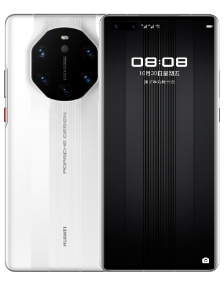
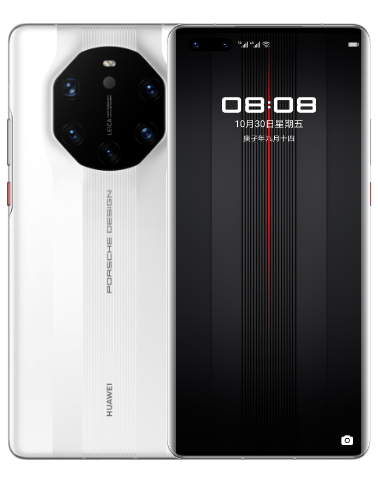
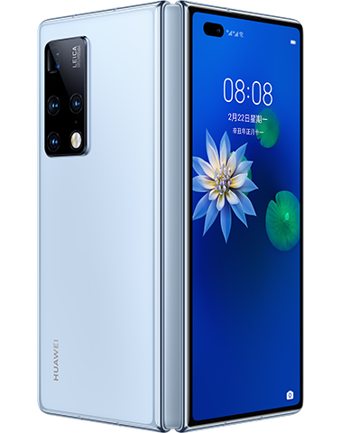
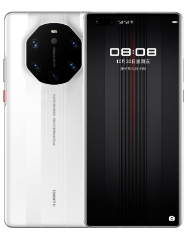
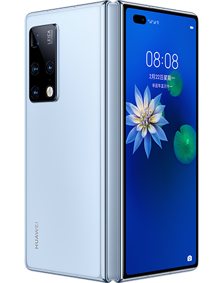
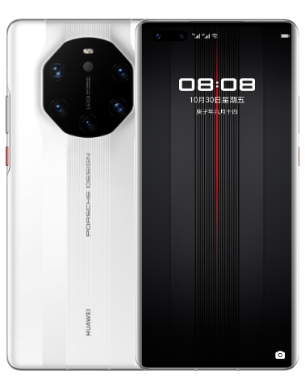

 


 



华为手机 隶属于华为消费者业务，作为华为三大核心业务之一， 华为消费者业务始于2003年底，经过十余年的发展，在中国、俄罗斯、德国、瑞典、印度及美国等地设立了16个研发中心。
2015年华为入选Brand Z全球最具价值品牌榜百强，位列科技领域品牌排名第16位。
2018年7月31日，国市场分析机构国际数据公司发布的初步数据显示，2018年第二季度，华为的出货量超过IPHONE，跃居全球第二位。
2019年7月17日，在中国质量认证中心官网（3C认证）上，有8款5G手机获得了3C认证，其中包括华为Mate 20X 5G、华为Mate X 5G等四款手机。 截止10月22日，华为2019年手机发货已经超过两亿台。 2020年3月31日，华为发布年报显示，2019年华为智能手机发货量（含荣耀）达到2.4亿台，同比增长约16.5%，成为全球第二大手机厂商。